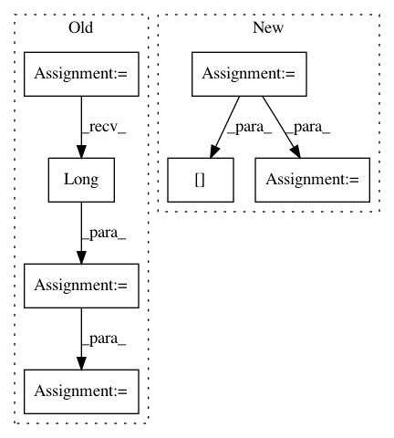

685be43fb35e0b628411e6e6805b75062b01067d,onmt/modules/copy_generator.py,CopyGeneratorLossCompute,_compute_loss,#CopyGeneratorLossCompute#Any#Any#Any#Any#Any#,174
Before Change
// tgt[i] = align[i] + len(tgt_vocab)
// for i such that tgt[i] == 0 and align[i] != 0
target_data = target.data.clone()
correct_mask = target_data.eq(0) * align.data.ne(0)
correct_copy = (align.data + len(self.tgt_vocab)) * correct_mask.long()
target_data = target_data + correct_copy
// Compute sum of perplexities for stats
loss_data = loss.sum().data.clone()
stats = self._stats(loss_data, scores_data, target_data)
if self.normalize_by_length:
// Compute Loss as NLL divided by seq length
// Compute Sequence Lengths
After Change
// tgt[i] = align[i] + len(tgt_vocab)
// for i such that tgt[i] == 0 and align[i] != 0
target_data = target.clone()
unk = self.criterion.unk_index
correct_mask = (target_data == unk) & (align != unk)
offset_align = align[correct_mask] + len(self.tgt_vocab)
target_data[correct_mask] += offset_align
// Compute sum of perplexities for stats
stats = self._stats(loss.sum().clone(), scores_data, target_data)
In pattern: SUPERPATTERN
Frequency: 3
Non-data size: 7
Instances
Project Name: OpenNMT/OpenNMT-py
Commit Name: 685be43fb35e0b628411e6e6805b75062b01067d
Time: 2018-11-25
Author: benzurdopeters@gmail.com
File Name: onmt/modules/copy_generator.py
Class Name: CopyGeneratorLossCompute
Method Name: _compute_loss
Project Name: dnouri/skorch
Commit Name: a7cd7a15a9baf741f2b4fcd32f3d8055827889b5
Time: 2017-08-08
Author: marian.tietz@ottogroup.com
File Name: examples/word_language_model/predict.py
Class Name:
Method Name:
Project Name: ncullen93/torchsample
Commit Name: 6ddf825a4aa1bcf3a35bba8d36bc433fe5ebaa39
Time: 2017-04-24
Author: ncullen@Nicks-MacBook-Pro.local
File Name: torchsample/utils.py
Class Name:
Method Name: th_nearest_interp_3d